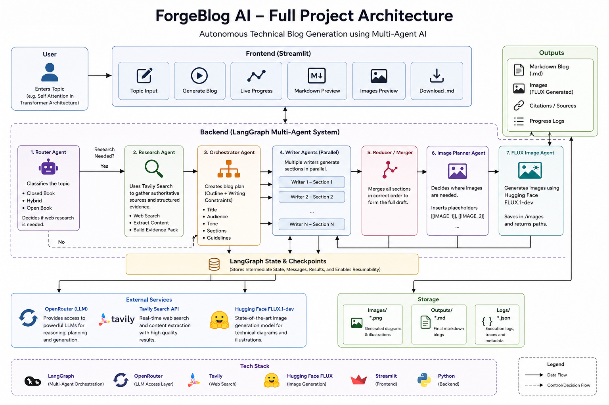

Topic routing
A router agent classifies the topic into closed-book, hybrid, or open-book mode and decides whether web research is needed.
PROJECT DEEP DIVE · CREATIVE AUTOMATION
An autonomous multi-agent technical blog generator that researches topics, writes sections in parallel, plans visuals, and exports Markdown and images.
ForgeBlog AI is an autonomous technical blog-generation system that turns a topic into a structured technical article with research, parallel writing, and supporting visuals. A Streamlit interface exposes the generation process, live progress, Markdown preview, image preview, and downloadable output.
A router agent classifies the topic into closed-book, hybrid, or open-book mode and decides whether web research is needed.
When research is needed, Tavily search gathers source material and structured evidence for the writing workflow.
The orchestrator creates a blog plan and multiple writers draft individual sections in parallel.
A reducer merges sections in order; image planning and the FLUX image agent create supporting visuals, with Markdown and images saved as outputs.
